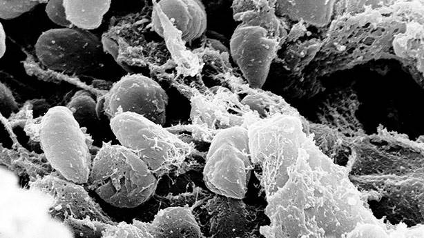

Lakabı 'Kara Ölüm' Olan, Milyonlarca İnsanın Ölümünden Sorumlu Bir Katil:
Veba (1347-1351)
Koronavirüsle bir gerçek tekrar gün yüzüne çıktı; Salgın hastalıklar. Tarihin birçok devrinde karşılaştığımız salgın hastalıklar yüzlerce, binlerce insanın hayatını alan bu hastalıkların en büyüğü vebaydı. Avrupa’yı kasıp kavuran veba salgını neler yapmıştı ki unutulmaz olmuştu?

Veba nedir?

Veba, Yersinia pestis adındaki bakteri tarafından oluşturulan enfeksiyon hastalıklarına verilen genel isimdir. Antik çağlardan beri görülmekte olup hala Afirka’nın bazı bölgelerinde mevcuttur.
Vebayı fareler mi taşımıştır?
Bulaşıcı ve öldürücü bir hastalıktır. Vebanın farelerden bulaştığı kanısı yaygındır, ancak gerçekte bakteriyi yayan bir tür piredir ve fareler de bu hastalığın kurbanıdırlar.
Tarihte veba salgınlarından önce şehirlerde büyük miktarda fare ölümlerinin meydana geldiği görülmüş, ölü farelerle temas eden insanların, pire ısırması nedeniyle bu hastalığa maruz kaldıkları tespit edilmiştir.
Yayılmaya başladı
Tarihler 541’i gösterdiğinde İmparator Jüstinyen yeni bitirttiği Ayasofya’nın keyfini çıkarıyordu. Konstantinopolis’i eğlence ve kültür merkezi haline getirmişti. Ancak yavaş yavaş yaklaşan bir tehlike vardı. Bir anda ortaya çıkan veba salgını herkesi esir almaya başlıyordu.
Veba nasıl ortaya çıkar?

İbn-i Sina (980-1037)'ya göre veba; durgun sular, gömülmeyen çürümüş cesetler, kayan yıldızlar, göktaşları, şiddetli ve sıcak rüzgârlar, yağmursuz fırtına nemliliği gibi hava ve toprak etkenleriyle havanın bozulmasından kaynaklanır. Çağdaş bir deyim kullanmak istersek, atmosfer kirliliğindeki değişiklikler.
Kara Ölüm geliyor
Girizgâhtan sonra asıl konumuza gelebiliriz. Avrupa o güne kadar gördüğü en büyük işgal ile karşı karşıyaydı. Moğollar doludizgin Orta Asya’dan kalkmış Avrupa kapılarına dayanmıştı. Gittikleri yerleri yakıp yıkıyor böylece ele geçiriyorlardı.
Avrupa’ya giriş yaptı
Moğollar Avrupa’yı ele geçirmeyi kafalarına koymuşlardı. Karşılarına çıkan kaleleri bir bir ele geçiyorlardı. Ancak bazı yerler oldukça fazla direnç sağlıyorlardı. Onlardan biri de Kırım’dı. İşte tam burada tarihin biyolojik silahı devreye girdi.
Veba yaygındı
Moğollar Kırım’ı Cenevizlilerden almak istiyorlardı. Ancak zorlu rakibi karşısında bir fikir akıllarına geldi. O sıralar Moğolların işgal ettiği topraklarda veba yaygındı ve birçok ölüm oluyordu. Komutanın aklına bu ölüleri kalelerin içine atma fikri gelmişti ama nasıl yapacaklardı?
Mancınık kullandılar
Cevabı çabucak buldular. Vebalı bedenleri mancınığa bağlayıp kalelerin içine atıyorlardı. Oldukça bulaşıcı bu hastalık kısa sürede bütün kaleye yayılıyor, herkesi hasta ediyordu. Moğollar da şehri ele geçirirdi.
Yolculuğuna başladı
Kırım’da başlayan bu ‘yolculuk’ hızla yayındı. Çünkü hasta olan Kırım şehri Cenevizlilere aitti ve Cenevizliler de tacir bir topluluktu. Haliyle hastalık kolaylıkla Avrupa’ya taşındı gemilerle.
Adı Kara Ölüm oldu
14. yüzyılda bu salgına "Büyük Ölüm" dense de, daha sonraki yıllarda "Kara Ölüm" olarak tanımlanmıştır. Bunun sebebi de, genel inanca göre, bu hastalık sonucunda deri altı kanamalar yüzünden derinin siyaha dönmesidir. Aslında bu ad mecazi anlamda kullanılmış olup, "kara" burada kasvetli, sıkıntılı, kederli anlamına gelir.
Kara Ölüm'ün Avrupa'da ve Yakın Doğu 'da Yayılması (1346-1353)
Hastalık: Hıyarcıklı veba
Yer: Dünya çapında
İlk vaka: Uzak Doğu
Varış tarihi: 1346–53
Ölümler: 70–200 milyon (arası)
Kara Ölüm'ün Toggenburg İncilinde resmedilmesi. (1441)
Salgının baş gösterdiği toplumlar, öncelerde bunu bir ‘Tanrının Gazabı’ olarak nitelendirdi. Bazı toplumlar ise, salgının nedenini, burçlara (astrolojiye), hurafelere, cadılara bağlamış, hatta cadı oldukları ileri sürülen kişiler, hastalıktan kurtulmak için yakılmıştır. Tanrı’nın gazabını yatıştırmak için Orta Çağ karanlığındaki Batı toplumlarında, "vebalıların yakılması", "cadı" ve "Yahudi avı" meşhurdur.
Sonuç olarak her uygarlık, tarihin farklı dönemlerinde kendi öldürücü hastalığını yarattı. Şu dönemlerde ise hızlı sanayileşme, doğanın katledilmesi, küresel ısınma yeni salgınların altyapısını oluştururken, sıtma, kolera gibi eski düşmanları da yeniden sahneye çıkarıyor. Öte yandan modern yaşam insanın en güçlü silahını, bağışıklık sistemini de elinden alıyor. Kısacası, hem altyapı hem üst yapı koşullarıyla ve sürekli artan nüfusuyla gezegenimiz, önümüzdeki yıllarda Mahşerin Dördüncü Atlısı’nın acımasız ama tarih yapıcı tırpanına gebe. Ve bu durum, modern tıp, mikrop teorisinden vazgeçip, salgın hastalıkları ekolojik bir zorunluluk olarak görüp, neşteri bu noktalara vuruncaya kadar sürecek gibi.
Bunlar da İlginizi Çekebilir